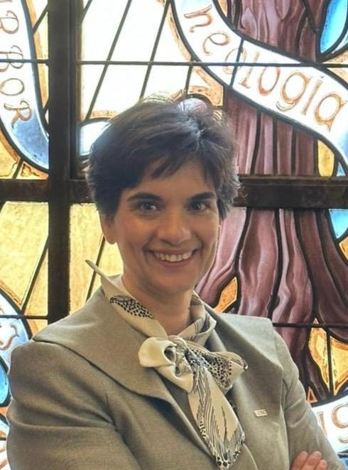

People
Researchers, engineers and collaborators working on secure hardware and integrated photonics.
16People · 5 categories
16 people
Permanent Researchers
2 peoplePost-Doctoral Researchers
1 peoplePhD Students
6 peopleTechnical Researchers
5 peopleExternal Collaborators
2 peopleNo people found.
Try another name or group.